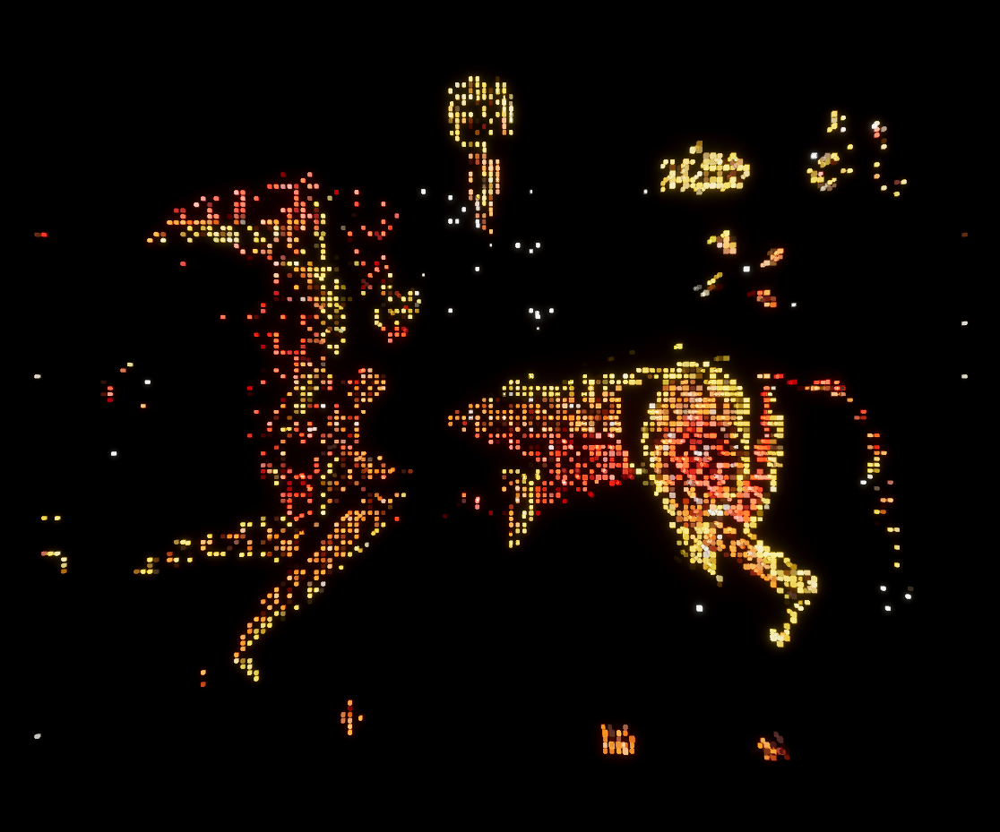
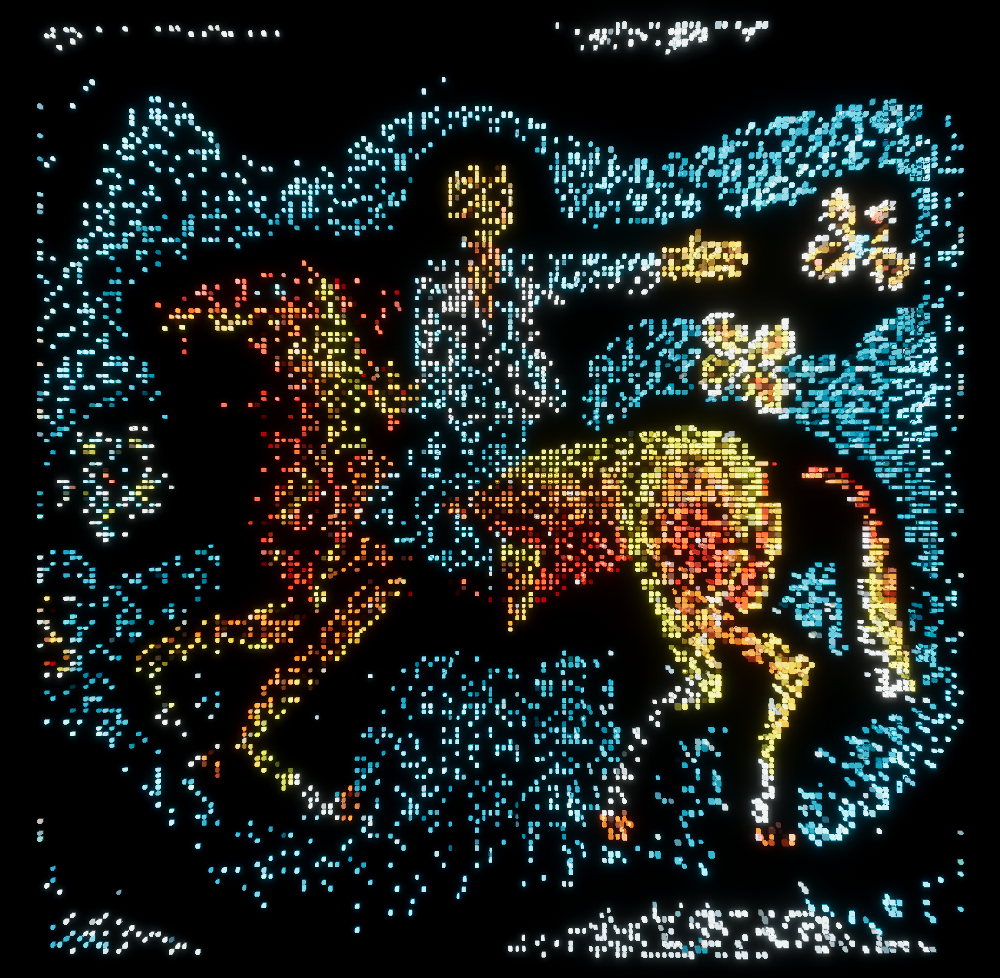
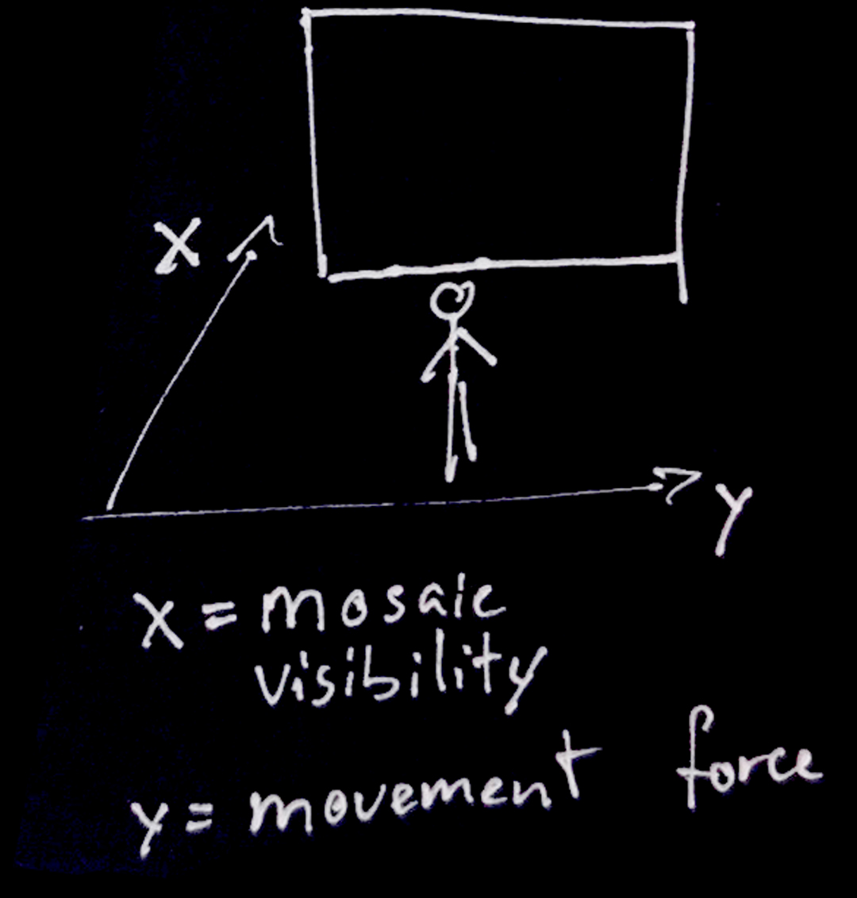

Mosaic
2025
Interactive Installation
During the XX century, while most of Ukraine was under totalitarian rule of USSR and Ukrainian culture and language was under constant terror of moscow, mosaics were one of the only mediums that preserved and developed Ukrainian tradition. We call to look at this significant part of Ukrainian heritage as its own — a modernist exploration of culture, depending on region where mosaic was made. They reflected local culture, traditions, legends, mythology or general knowledge about the region. Mosaics, often placed at bus stops or modernist buildings, are often seen as “soviet” , but that is just another colonial view on Ukrainian national heritage.
As the viewer moves closer to the installation, the destroyed mosaic reveals all of the details.
Software: Unity
Imput: Kinect




Test with sound and different mosaic